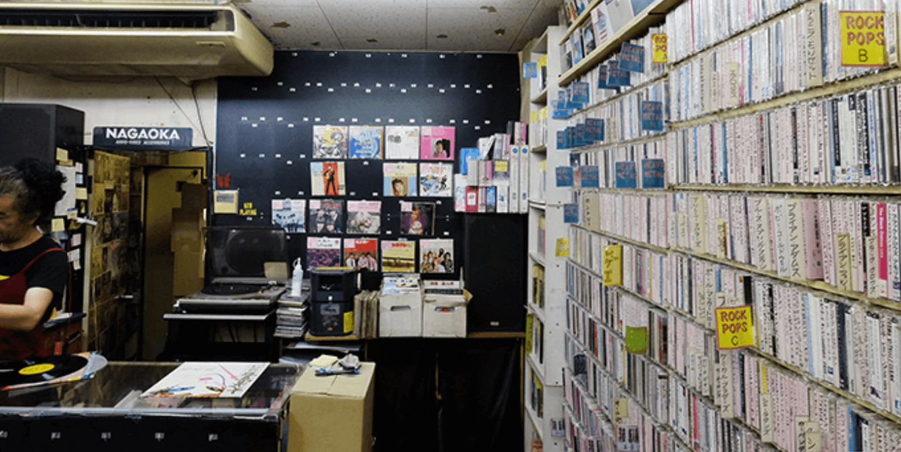

「大好」的諧音：跨越語言的雙文化熱愛
「台いすき」品牌來自於我們的文化設計。我們覺得一個品牌不只在於告訴別人我們是誰？更來自於我們的共理心，以日文「大好き」（Daisuki，大好）的同音梗，巧妙地將「台灣」的『台』融入其中，直接傳達了我們對台灣與日本兩種文化發自內心的喜愛。這份喜愛並非單向的追捧，而是源於多年來在兩地間的、居住與生活共感，所積累出來的善意設計。
台灣人讀設計的，電影的，經常浸潤在台日美學之間：我們被日本極致的細節、美學與哲學的設計所吸引，同時又無法割捨台灣人情社會中那份親切、溫暖和隨性的親切感。品牌的核心理念，便是要將這種看似衝突的特質，融合成一種獨特的「台日系生活美學」。
穿上文化身份：從服飾表達「我們是誰」到我們的善意表達
服裝是品牌最直接的文化觀點。「台いすき」的衣著，不僅是設計，更是關於文化的善意傳達。透過服飾的設計，表現出我們的身長，環境。例如，將台灣傳統的元素（如傳統圖案、特有口語）以日本簡約、低飽和度的設計手法呈現，使之既親切又具備國際感。

這種跨文化的融合，不僅讓台灣旅人能以獨特的方式展現「我們是誰」，也讓日本旅人在日常中感受到台灣的親切與日本文化的善意與尊重。服飾成為一種「美好相遇」的媒介，讓語言不通的旅人，也能透過衣服上的符號，會心一笑，建立起跨越國界的連結。
大好的體驗：衣、食、旅、器、感 的共感
台いすき 的生活哲學，體現在「衣、食、旅、器、感」五個維度的全方位共鳴中： • **衣 (Clothing)**：跨文化設計的服飾，表達身為旅客的尊重與善意 • **食 (Food)**：職選日式與台式風格的味蕾口好。• **旅 (Travel)**：相遇兩地棲居的種種美好事物 • **器 (Objects)**：感受台日物件帶來生活的小感動。 • **感 (Sensation)**：透過所有媒介傳遞出的，是台日的那份微暖、細微、和對生活細微的好感。

這樣的文化設計，我們希望台いすき不僅僅是一個品牌，而是一種**當下生活風格的提案者**。我們誠摯邀請所有認同這份跨文化美學的人，無論是台灣人、日本人還是其他國家的旅人，都能在這份美好中找到共鳴，並將這份溫柔的相遇延續到自己的日常中。
所看，所見，所作：從觀察到實踐的美學
專欄四的標題「所看，所見，所作」，總結了JILL&tommy的實踐路徑：**所看**（觀察並理解兩種文化），**所見**（將差異與共鳴內化為設計靈感），最終成就了 **所作**（創造出跨越國界、充滿溫度的台日系生活物件與體驗）。這不僅是職人精神的體現，更是對「生活大好」哲學的堅持。